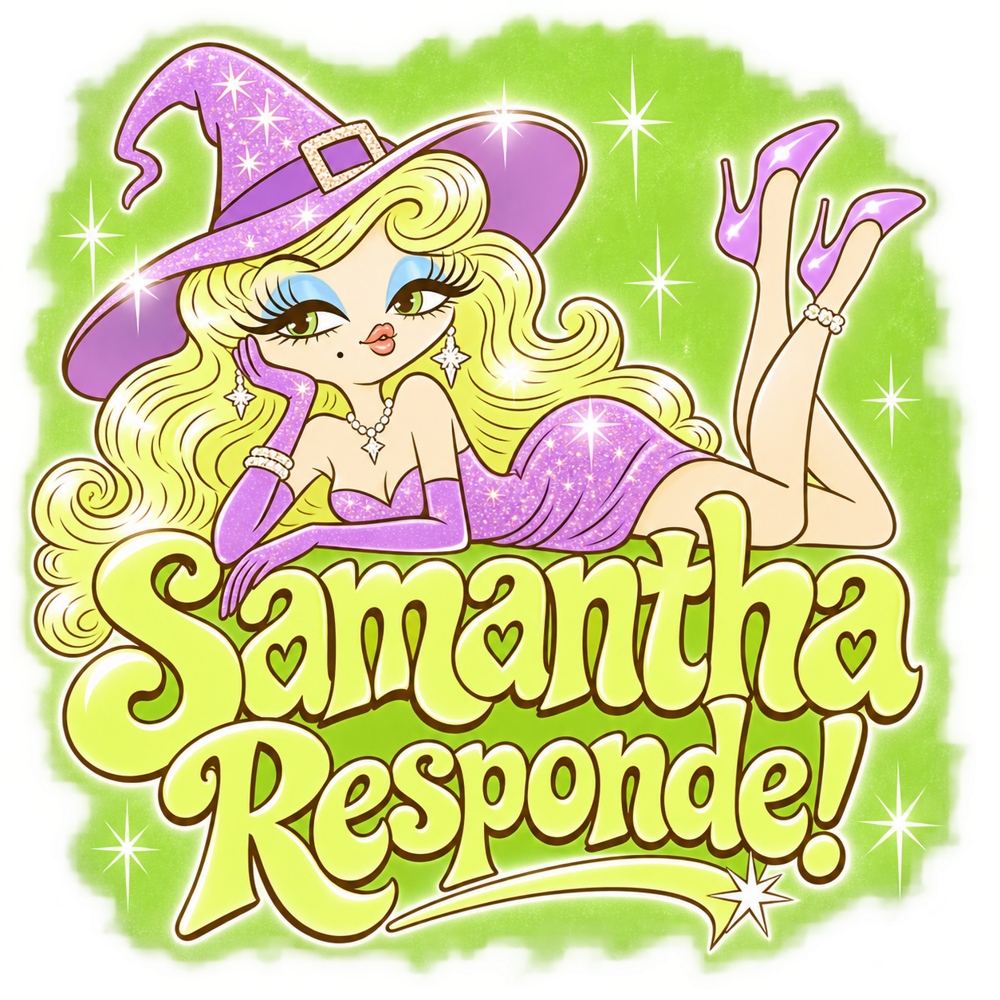

¿Qué siente por mí?
↗
¿Me va a contactar?
↗
¿Qué le frena para contactarme?
↗
¿Está pensando en mí?
↗
Dame un consejo laboral aplicable
↗
¿Cómo puedo sentirme mejor ahora?
↗
¿Por qué me cuesta avanzar en mi vida?
↗
¿Cómo aumentar mis fuentes de ingresos?
↗
78 cartas · 8 preguntas · Interpretaciones simbólicas, no predicciones verificables.
← Volver
Otra carta ↗
Inicio